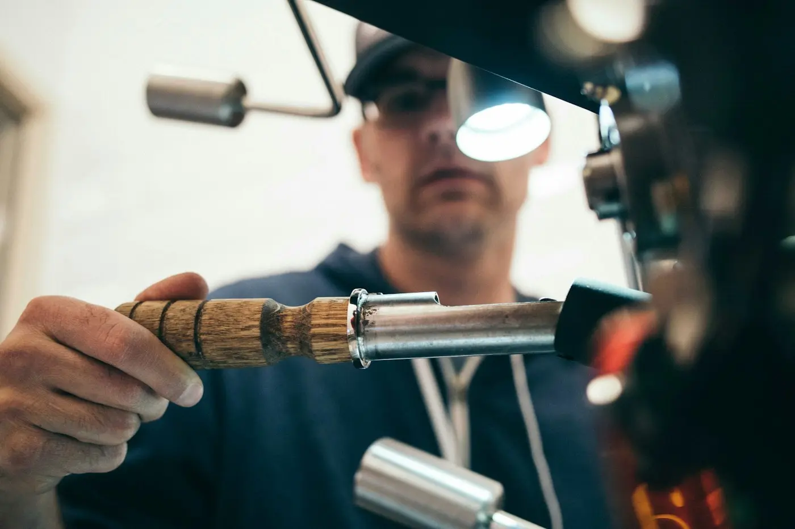
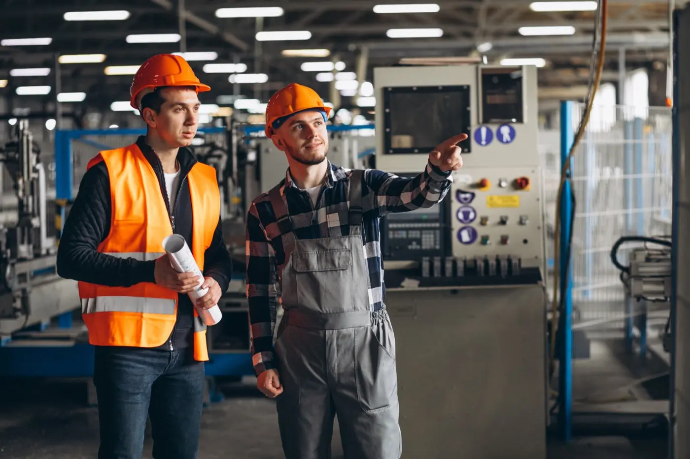
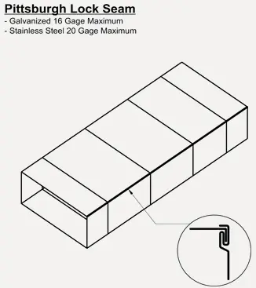

ALTAKHLEEQ Electro Mechanical Industries
Duct manufacturing in Dubai with CNC-controlled production and in-house quality assurance.

ALTAKHLEEQ ELECTRO MECHANICAL Industries – Dubai
Ducts are available mainly in two types, rectangular and circular, but can be made of different materials like G.I, mild steel, stainless steel and aluminium. Installing ductwork has many advantages like reducing electricity bills by correct channelling and sizing according to the airflow, but this can be achieved only with good quality ducts and qualified installation technicians.
Duct Manufacturing & Production Process
Fabrication schedule
After receiving the tagged drawing, a fabrication schedule is prepared for the ducts to be made after coordinating with the customer.
Dimensions to the fabricator
The fabricator receives the fabrication schedule and dimensions of the duct to be manufactured.
CNC programming
The CNC operator inputs the data into the CNC machine, such as the coil line or plasma cutter.
Forming, seaming & cleats
Square ducts are processed through the CNC-operated coil line machine to make ducts of 1200 mm (standard length), then passed through the duct zipper for seam joining and the automatic precision cleat bending machine for “C” cleats to form the complete duct.
Quality inspection
At each stage a factory foreman continuously monitors quality. After completion, the ducts are sent for inspection by the Quality Assurance Department.
